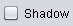

Mõistekaardi tööriistadest annab ülevaate järgnev juhend. Allolevatel linkidel klikkides saad ülevaate tööriistade võimalustest:
1. Sõlmkoha loomine
Vali sobiv kuju ning klõpsa mõistekaardil. Ilmub uus sõlmkoht.
Mõistekaardil olevad sõlmkohad tuleb alati ühendada omavahel.
Rohelise äärise ilmumisel sõlmkoha ümber, eemalda sõrm hiireklahvilt.
Vali sõlmkoht ning siis klõpsa eemaldamise nupul. Ilmub hüpikaken ja sõlmkoha eemaldamiseks klõpsa nupul Yes.
Järgi samu juhiseid ühenduse eemaldamisel (sõlmkohad jäävad sellel juhul alles). Vali ühendus ning siis klõpsa eemaldamise nupul.
Ilmub värviskaala. Vali sobiv värv.
Ilmub värviskaala. Vali sobiv värv.
| Nupp | Funktsioon |
|---|---|
| Kõigi sõlmkohtade ja ühenduste eemaldamine | |
| Näita kasutaja valitud taustavärvust (vaata Sõlmkoha värvuse muutmine) | |
| Näita vaikimisi valitud taustavärvust (näiteks: helehall) | |
 |
Näita helehalli äärist sõlmkoha ümber (värvust ei saa muuta) |
|  | Ära näita äärist sõlmkoha ümber |